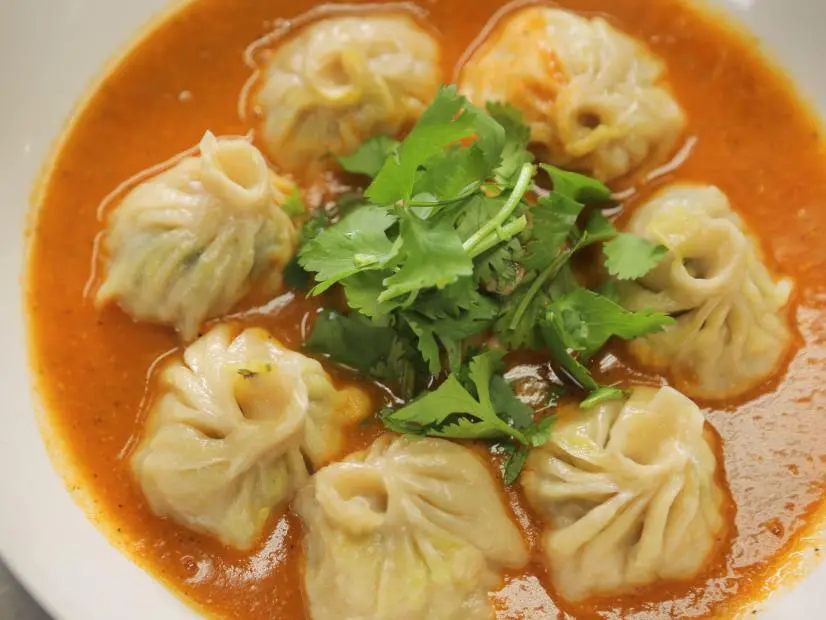

Momos are a type of steamed filled dumpling in Tibetan and Nepali cuisine that is also popular in neighbouring Bhutan, Bangladesh, and India. The majority of Tibetan momos are half-moon in shape like jiaozi, while Nepali momos are normally round like baozi. Momos are usually served with a sauce known as achar influenced by the spices and herbs used within many South Asian cuisines. It can also be used in soup, as in jhol momo and mokthuk.
